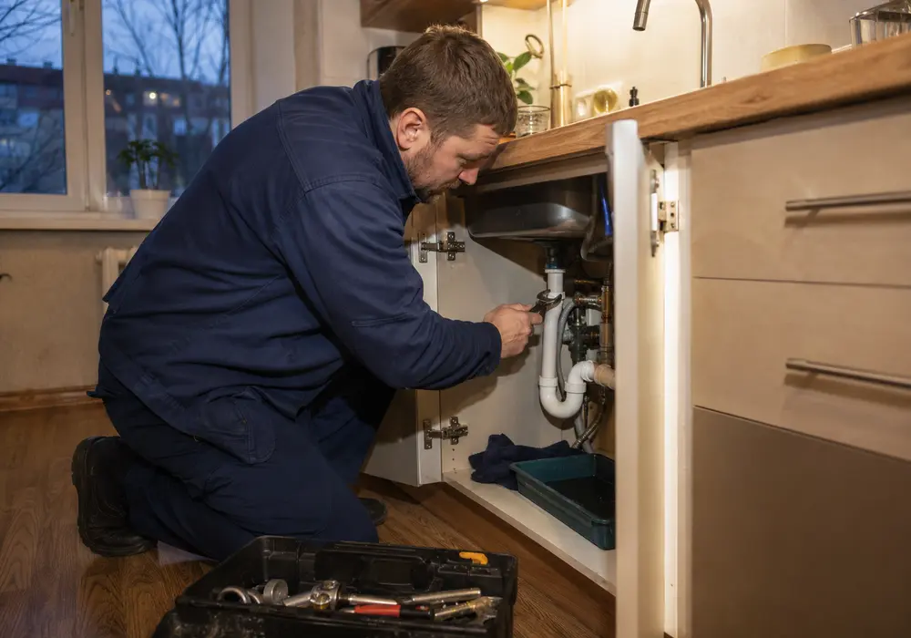
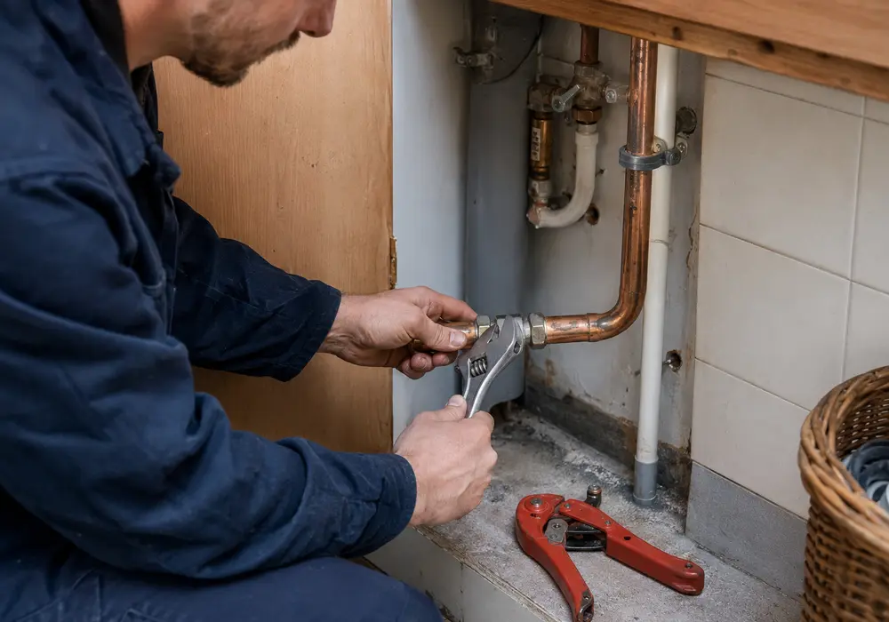
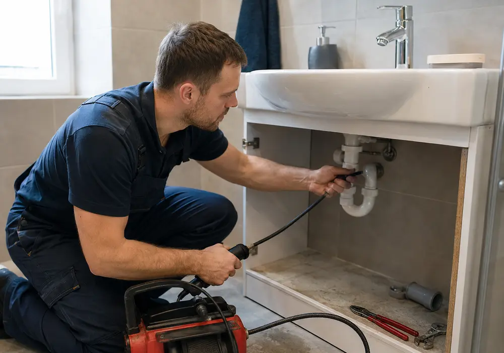
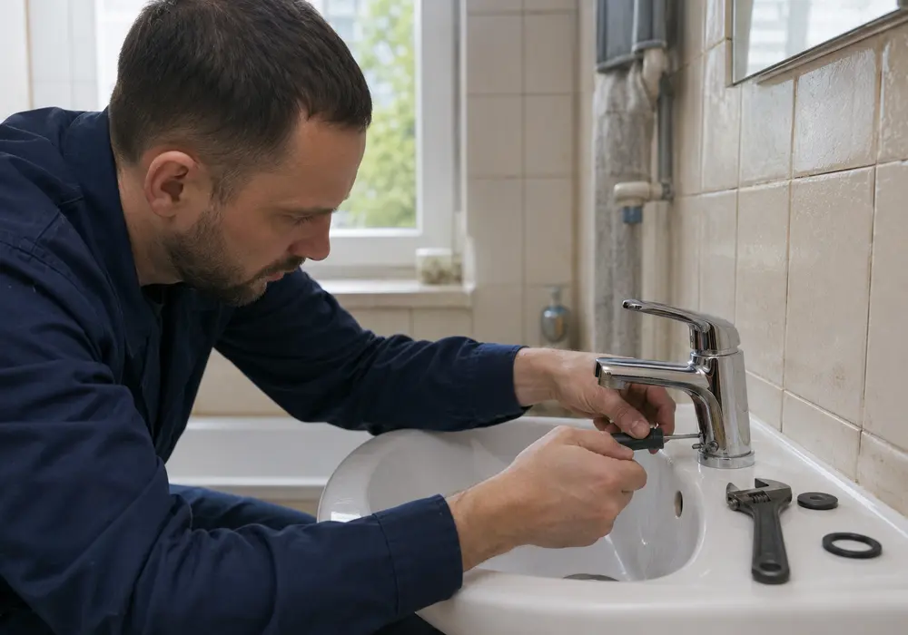
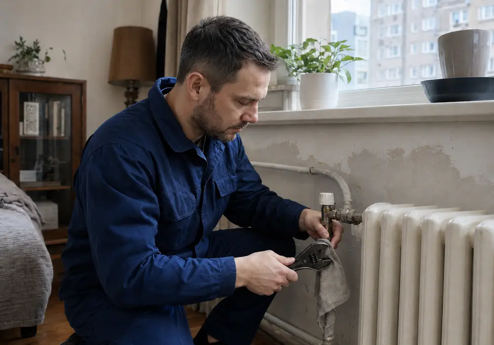

Steidzami
Avārijas remonts
Noplūdes lokalizēšana, bojājuma diagnostika un drošs pagaidu vai pastāvīgs risinājums.
Pieteikt darbu →Vietējais meistars Rīgā
No nelielas noplūdes līdz vannas istabas montāžai — skaidrs process, rūpīgs darbs un saprotama komunikācija.
Pakalpojumi
Šis ir testa saturs, kas parāda, kā viena pakalpojumu lapa izskatītos ar īstu struktūru un pilnvērtīgiem vizuālajiem materiāliem.

Noplūdes lokalizēšana, bojājuma diagnostika un drošs pagaidu vai pastāvīgs risinājums.
Pieteikt darbu →
Nolietotu posmu, ventiļu un savienojumu pārbaude, remonts vai nomaiņa.

Aizsprostojumu novēršana un notekas darbības pārbaude bez liekas nekārtības.

Izlietņu, jaucējkrānu, dušu un citu santehnikas iekārtu uzstādīšana.

Radiatoru, ventiļu un redzamo apkures sistēmas mezglu apkope.
Vienkāršs process
Labs serviss nav tikai salabota caurule. Tas ir skaidrs ierašanās laiks, saprotams darba plāns un mājoklis, kas pēc remonta nav atstāts nekārtībā.
Pievienojiet svarīgāko informāciju pieteikuma formā.
Precizējam darbu, materiālus un piemērotu apmeklējuma laiku.
Pārbaudām rezultātu un sakārtojam darba vietu.
Darba vide
Nevis sterili kataloga kadri, bet ticama ikdienas darba sajūta.
Biežākie jautājumi
Testa lapā nav īsta telefona, cenu vai nepārbaudītu solījumu. Reālā projektā tos ievietotu tikai pēc uzņēmuma datu apstiprināšanas.
Nē. Šī ir demonstrācijas lapa dizaina, struktūras un GitHub Pages testēšanai.
Nē. Forma darbojas tikai pārlūkā un neko nenosūta ārējam servisam.
Jā. Pirms palaišanas jāievieto verificēti uzņēmuma dati, kontakti un juridiskā informācija.
Gatavs nākamajam solim?